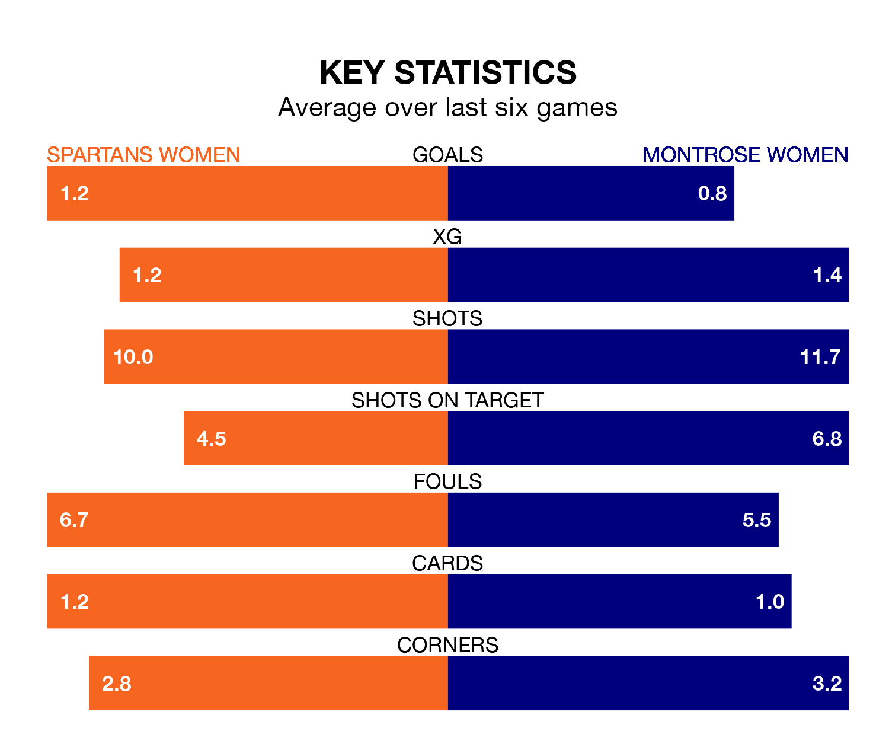

Struggling Spartans Women face Montrose Women at the Ainslie Park Stadium on Sunday looking to build on a win in their last league outing.
After securing all three points with a 0-7 victory over Celtic Women on December 10, the Spartans sit 11th in SWPL 1.
They travel to play a Montrose side 10th in the standings, who also won their last match, 3-2 against Dundee United Women.
Spartans are in awful form in SWPL 1, with no wins and six losses from their last six games.
With a win and two draws over that period, Montrose's form is better – they have taken five points from 18, compared to the Spartans' zero.
With 14 goals in 15 games so far this season, the away team are the league's second-lowest scorers with 0.9 goals per game. And they are conceding more than average, letting in 62 goals at a rate of 4.1 per game.
The hosts are also below average scorers, with 1.1 goals per game, compared to a league average of 2.2. They have conceded 2.9 goals per game.
